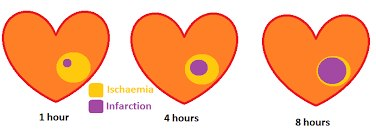
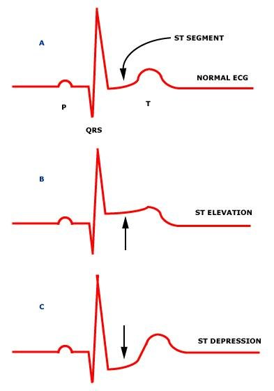
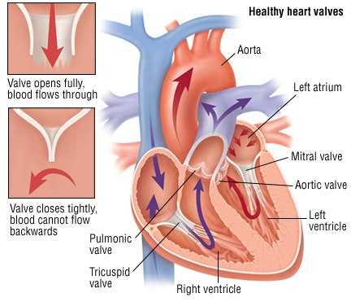
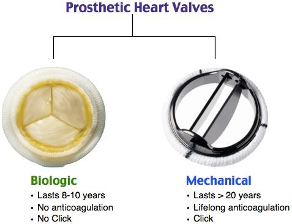

Review · Topic 8
Heart Disease
Coronary Artery Disease (CAD)
For further study, see Med Surg II Week 1 – Coronary Artery Disease and Acute Coronary Syndrome.
What Is Going On in CAD
- One disease, three names: coronary artery disease, coronary heart disease, ischemic heart disease.
- The coronary arteries perfuse the heart: they get oxygen to the heart muscle. A blocked artery is a problem for the muscle it feeds.
- Why it matters: the left main and the left anterior descending (LAD) perfuse the left ventricle, the powerhouse chamber. A complete blockage there is the "widow maker": often fatal before the patient reaches the hospital.
Atherosclerosis, responsible for almost all CAD, is taught in the Cardiovascular review
How atherosclerosis leads to an MI is taught in Cardiovascular Critical Care Issues
Risk Factors
Non-Modifiable
- Age: the risk increases significantly with each decade of life.
- Gender: men are at greater risk.
- Family history: especially of premature disease, in younger people.
Modifiable
- The four most firmly established: elevated serum lipids, hypertension, tobacco use, physical inactivity.
- Hypertension: untreated, the pressure in the arteries damages them over time, and they harden. Often silent.
- Tobacco: the risk is proportional to the number of cigarettes smoked.
- Also: obesity, higher for the "apple" shape than the "pear". Diabetes mellitus, which needs tight glucose control. Depression and stress.
From Stable Angina to a STEMI
Stable Angina
Chronic ischemic heart disease. Stable for years and predictable: the patient lives with it.
Unstable Angina
ACS. An incomplete occlusion, with no heart damage. An emergency: it precedes an MI.
NSTEMI
ACS: an MI. An incomplete occlusion, but heart cells die. The smaller infarct, with better outcomes.
STEMI
ACS: an MI. The larger, more extensive infarct, with poor outcomes.
Stable versus unstable angina is taught in Cardiovascular Critical Care Issues

Recognizing an MI
Anginal Pain
- Brought on by: exertion or stress.
- Relieved by: rest or sublingual nitroglycerin.
- Lasts: less than 15 minutes.
MI Pain
- Brought on by: nothing. Often in the early morning.
- Relieved by: opioids only.
- Lasts: 20 minutes or more.
- The hallmark: severe, immobilizing chest pain not relieved by rest, a change of position or nitrates.
- Feels like: heaviness, pressure, tightness, burning, constriction, crushing. Ask about pressure, not only pain.
- With: nausea and vomiting, diaphoresis, dyspnea, anxiety or fear, dysrhythmias.
Atypical Presentations
- Who: women, older patients, patients with diabetes.
- Women's anginal signs: fatigue, the most prominent. Shortness of air, indigestion, anxiety.
- A silent MI: women and patients with diabetes may have no symptoms at all.
Telling Unstable Angina, NSTEMI and STEMI Apart
| Condition | 12-Lead EKG | Troponin |
|---|---|---|
| Unstable angina |
|
|
| NSTEMI |
|
|
| STEMI |
|
|
Troponin, when it rises and how it is drawn, is taught in the Cardiovascular review

STEMI and NSTEMI Care
First Care for Suspected ACS
- 12-lead EKG within 10 minutes of arrival. Repeated every 10 to 15 minutes while it is not diagnostic and suspicion remains: an EKG is a snapshot in time.
- Continuous telemetry: for dysrhythmias, the most common complication of an MI, and ST changes. It monitors but cannot diagnose a STEMI. ST elevation on the monitor: get a 12-lead.
- Upright, with oxygen by nasal cannula, to support ventilation.
- Aspirin 325 mg, chewed and swallowed, for its antiplatelet effect.
- Nitroglycerin 0.4 mg SL: one at a time, 5 minutes apart, up to 3, for persistent chest pain. Blood pressure first: it drops. Too low: morphine instead.
- Morphine IV: for unacceptable, persistent discomfort. Decreases preload and afterload, easing the heart's workload, and helps the anxiety. Often better tolerated than nitroglycerin.
- Baseline labs: cardiac markers such as troponin, electrolytes, H&H, possibly coags.
- Heart and lung sounds: a new murmur, gallop or rub. Crackles may mean left-sided heart failure.
The drugs for an MI, MONA-TAS, are taught in Cardiovascular Critical Care Issues
Reperfusion: Three Strategies
| Strategy | For | Timing | What to Know |
|---|---|---|---|
| Percutaneous coronary intervention (PCI) |
|
|
|
| Thrombolytic (fibrinolytic) therapy |
|
|
|
| Coronary artery bypass graft (CABG) |
|
|
|
After a PCI
- Watch for ischemia: chest pain, EKG changes, dysrhythmias, hemodynamic instability.
- Dual antiplatelet therapy: aspirin with another antiplatelet, such as clopidogrel. IV heparin may be given during the procedure. A delicate balance: thin, but not so thin the patient bleeds out.
- The sheath comes out 4 to 6 hours after the procedure.
- Internal bleeding: the heart rate creeps up, compensating for the lost volume.
Heart Failure
For further study, see Med Surg II Week 2 – Heart Failure.
Heart failure: inadequate pumping or filling of the heart.
| Cause | How It Leads to Heart Failure |
|---|---|
| Preload | Increased blood volume increases preload. |
| Afterload | Elevated, as by untreated hypertension: harder for the blood to get out of the heart. |
| Myocardial contractility | A damaged myocardium, as after an MI, cannot contract, whatever the fluid volume. |
| Heart rate | Too fast or too slow, for a long period. |
Preload, afterload and contractility are taught in Rhythms & Pacemaker Review
The ejection fraction, reduced in heart failure, is taught in the Cardiovascular review
Left-Sided Versus Right-Sided
Left-Sided Heart Failure
- Blood backs up into: the left atrium and the pulmonary veins.
- Cues: pulmonary. Pulmonary congestion and edema: crackles, rhonchi, wheezes, cough, tachypnea. Blood-tinged sputum, from damage at the alveoli.
- Also: dyspnea on exertion or at rest, orthopnea, the tripod position. A raised heart rate. Restlessness, confusion, fatigue, cyanosis.
- Advanced: paroxysmal nocturnal dyspnea (PND).
Right-Sided Heart Failure
- Blood backs up into: the right atrium and the venous circulation, everywhere but the lungs.
- Cues: the body. JVD first: the jugular vein sits just outside the right atrium. Never an expected finding.
- Also: hepatomegaly, the liver tender in the RUQ, and an engorged spleen. Ascites. GI congestion: nausea, no appetite. Peripheral edema, settling with gravity in the ankles, and in the hands. Scrotal edema, which can be very painful. Fatigue.
- Not cor pulmonale: right-sided failure that results from left-sided failure.
Chronic Versus Acute Decompensated
Chronic Heart Failure
- Diagnosed: as an outpatient.
- Course: periods of acutely or slowly worsening cardiac function. Can be insidious: the patient tells the doctor about fatigue.
- Cause: often the damage from other cardiac events or disease, such as CAD or hypertension, whether or not it showed as an acute event.
Acute Decompensated Heart Failure (ADHF)
- Diagnosed: as an inpatient.
- Course: chronic heart failure's signs and symptoms worsen and need urgent therapy. Life-threatening: acute interventions. Acute: no time to compensate.
- Presents with: shortness of air, from excess fluid and cardiac overload. Maybe 4+ edema and ascites, but not being able to breathe is what brings the patient in.
What heart failure looks like in the ICU is taught in Cardiovascular Critical Care Issues
Valve Disease
For further study, see Med Surg II Week 1 – Valvular Problems.
The valves keep the blood moving one way: each lets the blood leave one chamber for the next, and slams shut when the next chamber contracts. The mitral and aortic valves, on the left, high-pressure side, take more of a beating: most repairs and replacements are theirs.

| Problem | What It Is | Cause |
|---|---|---|
| Stenosis |
|
|
| Regurgitation |
|
|
| Prolapse |
|
|
The two most common valve problems are taught in Cardiovascular Critical Care Issues
What Valve Disease Looks Like
- Heart failure: the blood backs up. From the left side into the lungs, from the right into the periphery. Depends on the valve and the severity.
- Classic: exertional dyspnea, weakness, fatigue, chest pain, a murmur, pulmonary or peripheral edema.
Treatment
Treating Valve Disease
- Without surgery first: antibiotic prophylaxis, to prevent rheumatic fever, rheumatic heart disease and infective endocarditis. Sodium restriction. Drugs for the heart failure. Anticoagulants and antidysrhythmics.
- Repair before replacement: commissurotomy, valvuloplasty (a balloon), annuloplasty (rings). Some are percutaneous, as is an aortic valve replacement.
Mechanical Valve
- Lasts: more than 20 years. More durable.
- Anticoagulation: lifelong. The body sees the mechanical parts as foreign, and clots form.
- Sound: a click, sometimes heard at the bedside without a stethoscope.
- Chosen for: a patient who will adhere to lifetime anticoagulation.
Biologic Valve
- Lasts: 8 to 10 years. Less durable. Usually porcine: a pig valve.
- Anticoagulation: none needed.
- Sound: no click.
- Chosen for: an older patient with a shorter life expectancy, or one unwilling or unable to adhere to anticoagulation.

After a Valve Replacement
- Recovery: very similar to a CABG. Sometimes done with a CABG, in the same surgery.
- A prosthetic valve: a medic alert bracelet or card. A metal valve: no MRI.
Post-op care after cardiac surgery is taught in Cardiovascular Critical Care Issues
Warfarin for a valve, the INR and its antidote, is taught in the Hematology review
Pharmacology for Heart Failure, CAD and Hypertension
For further study, see Med Surg II Week 1 – Coronary Artery Disease and Acute Coronary Syndrome, Med Surg II Week 2 – Heart Failure and Fundamentals II Week 2 – Cardiovascular.
| Drug | What It Does | Used For | Watch For |
|---|---|---|---|
| Beta blockers |
|
|
|
| Calcium channel blockers |
|
|
|
| Digoxin |
|
|
|